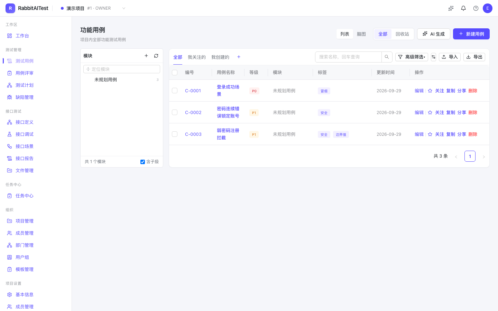
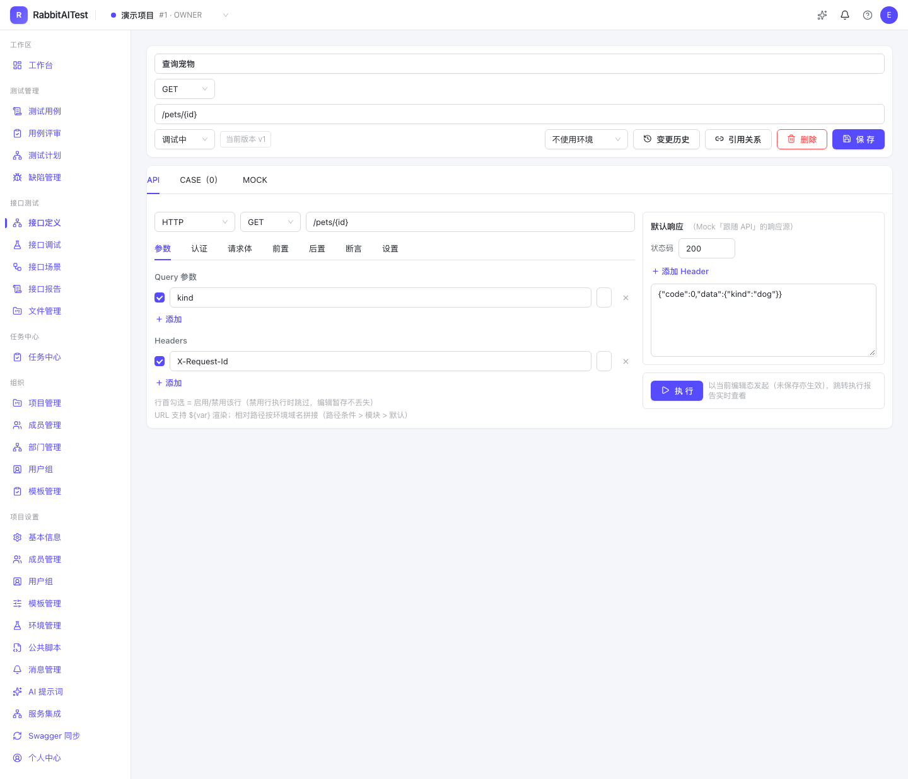
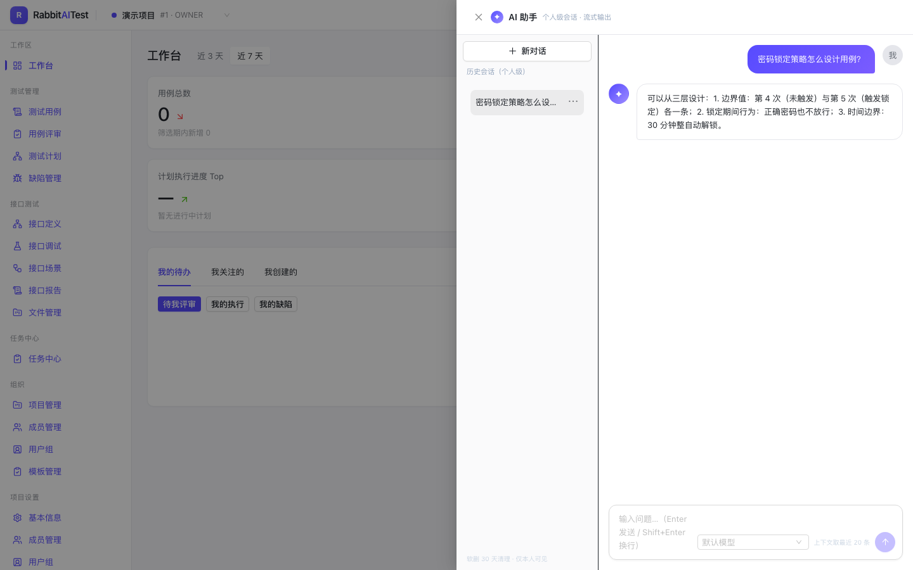
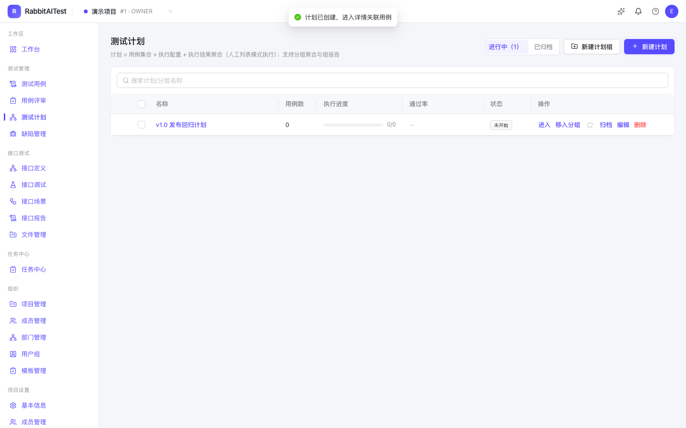

覆盖系统设置、项目管理、测试用例、测试计划、缺陷管理、接口测试、工作台、消息协作、AI 与 CLI 终端十大模块。 以下每条能力都可追溯到仓库内的功能规格与变更日志。
以下截图由 Playwright 对运行中的系统实拍（1440×900），与仓库 CI 视觉快照同一条流水线。








纯 TypeScript 单一 Monorepo，中间件仅 PostgreSQL + Redis + MinIO 三个。
pnpm workspace + Turborepo
apps 四服务（web / engine / mock / plugin-runner）+ packages 四包
Next.js App Router + React 19
API 走 Route Handlers（REST /api/v1），OpenAPI 快照进 CI
Ant Design + Tailwind + TanStack Query + Zustand
@antv/x6 脑图 · Monaco · @ant-design/x 智能助手
embedded-postgres 内嵌免外部 DB（可切 PostgreSQL 16）
Prisma 唯一出口，八域 45 实体一次建齐
自研 Node.js worker：undici 采样 + p-limit 并发槽 + quickjs 沙箱
不用 JMeter（仅兼容 jmx 导入），引擎零数据库依赖
BullMQ + Redis（repeatable job 定时）
SSE 事件流 + Redis Stream 断线续传
单测 + JMeter 接口 + Playwright UI 三层测试为「完成」定义
CI 六作业全绿才可合并
Docker Compose 一键（标准版）/ Helm（企业版资源池）
默认 4 进程：web（含内嵌 PG）+ engine + mock + redis
Sprint 5「协作通知」里程碑的验收录屏（未经剪辑，归档于 仓库 docs/）。
三条命令起全套服务；所有设计文档随仓库开源，可逐份追溯。
# 克隆并启动（web 含内嵌 PostgreSQL 自动初始化 + engine + mock）
git clone https://github.com/RabbitAI-Lab/RabbitAITest.git
cd RabbitAITest
pnpm install && pnpm dev
# 质量验证（与 CI 同口径）
pnpm test # Vitest 单测
pnpm test:api # JMeter 接口自动化（55 计划）
pnpm test:e2e # Playwright UI 自动化（自动起全套服务）
# Docker Compose 一键部署（标准版）
docker compose -f deploy/docker-compose.yml up -d要求：Node.js ≥ 20、pnpm 10；数据库默认内嵌，DATABASE_URL 可切外部 PostgreSQL 16。
到 GitHub Issues 提交问题； 失败任务可在产品内一键导出「排障包」（任务快照 + 事件流末 50 帧 + 日志检索说明）随 issue 附上。
里程碑 M1–M9 已全部交付（每个 Sprint 三层测试 + CI 六作业全绿），当前版本 v0.7.2。